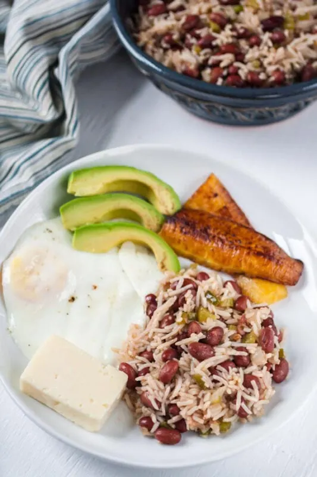

Casamiento

Description:
This is a classic Salvadorian recipe of rice and beans.
Ingredients:
- Red Beans
- Onion
- Garlic
- Salt
- Rice
- Tomato
- Chicken Bouillon
Steps:
- Boil beans with a slice of onion, 1 garlic clove and salt for several hours
- Add oil to a sauce pan, and saute chopped onion, halved garlic, and chopped tomato.
- Brown rice in sauce pan, then add water and chicken bouillon.
- Once boiling, lower heat and cook for 20 minutes.